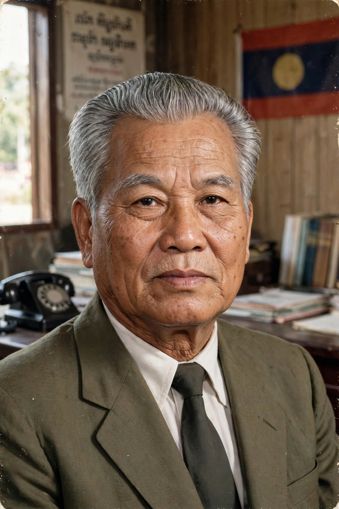

| Kaysone Phomvihane | |
 Kaysone Phomvihane (1920–1992) | |
| Born | 13 December 1920, Savannakhet, French Laos |
|---|---|
| Died | 21 November 1992, Vientiane, Laos |
| Offices | General Secretary of the LPRP (1955–1991); Prime Minister of Laos (1975–1991); President of Laos (1991–1992) |
| Party | Lao People's Revolutionary Party |
Kaysone Phomvihane (13 December 1920 – 21 November 1992) was a Laotian revolutionary and statesman who led the communist Lao People's Revolutionary Party (LPRP) from its founding and ruled Laos from the communist victory in 1975 until his death. He served as the first prime minister of the Lao People's Democratic Republic (1975–1991) and then as its president (1991–1992). His portrait appears on the Lao kip banknotes, and he remains officially venerated as the founder of the modern Lao state.
Kaysone was born Nguyen Cai Song in Savannakhet, the son of a Vietnamese father and a Lao mother. Studying law in Hanoi, he was recruited into the Indochinese Communist Party and became a founding figure of the Lao resistance. In 1955 he became general secretary of the newly formed Lao People's Party (later the LPRP), directing the Pathet Lao insurgency from bases in the north-east, closely allied with North Vietnam.
Through the Laotian Civil War (1959–1975), Kaysone remained the movement's supreme strategist while Souphanouvong served as its public face. After the fall of Saigon and Phnom Penh in 1975, the Pathet Lao took Vientiane; on 2 December 1975 the monarchy was abolished and the Lao PDR proclaimed, with Kaysone as prime minister.
Kaysone's early government attempted rapid socialist transformation, sending thousands of officials to re-education camps and collectivising agriculture, policies that drove a large refugee exodus. From 1979 he pragmatically retreated, and in 1986 he launched the New Economic Mechanism — market-oriented reforms modelled on Vietnamese doi moi — while preserving the party's political monopoly. In 1991 he moved to the presidency under a new constitution that dropped Marxism-Leninism from the state ideology, dying in office the following year.